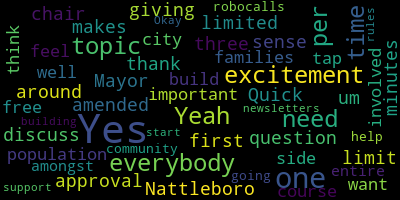
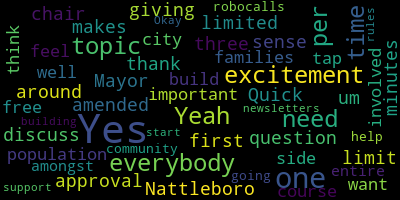

total time: 50.1 minutes
total words: 7769

total time: 0.94 minutes
total words: 119

{kind=link}
total time: 0.97 minutes
total words: 208

total time: 5.2 minutes
total words: 780

[Graham]: Okay. So please be advised there will be a meeting of the Medford Comprehensive High School Elite Committee held at Leisure 489, Medford Occasional Technical High School, 489 Windsor Street and via remote participation for the community. Meetings can be viewed live on the Medford Public Schools YouTube channel, preventative community media, and your local cable channel, podcast channel, 98422 Horizon Channel 4345447. The meeting will be recorded. Please log in by using the following information. The due meeting ID is 963-2041-9196. Just like editorial comment, you have to sort of read that. You need a description for everybody to know what meeting is that day. You all know why you're here, but some days you might watch this. want to know. Okay, so I'm going to do a quick roll call. Mayor Mungo-Kern.
[D'Orsi]: Present. Dr. Bergensen. Present. Dr. Lucey. Present. Dr. Cushing. Present. Artic Graw. Present. Libby Brown. Present. Marissa Desmond. Present. Hi, Marissa. Hi. I'm good, thank you. Tracy Keene. Present. Emily Lozaro. Present. Nicole Morrell. Present. Aaron Olapodich. Present. Keith Kreisner. Present. Larry Brown. Present. Bob Dickinson. Not here. Hannah Max. Not here. Joe Bowen. Here. Tom Dalton. Here. Chad Stout. Lori Hodgson. Present. Adam McLaughlin. Present. So, Philip Santos.
[Preisner]: Yeah.
[D'Orsi]: Oh, hi, Philip. Come join us. We'll make it for you. I promise. Um okay. So, uh yeah. Five absentee, twenty credit. So, the meeting is called to order. Uh okay. I'm hoping that we won't need the full two hours tonight. Uh I know everyone probably We'll see what we can do.
[Graham]: Marissa, if you have any questions, feel free to raise your hand. You can all see your squares. So that might just help us know that you want to get a wordage. The next thing on the agenda is what we call a consent agenda. And it's essentially a place where you put items that have to be officially approved by the committee. but for which like there's probably no conversation really to have. So the three items that are in there that we need to approve tonight are our meeting minutes from our personal meeting, from our relief and onboarding subcommittee meeting, from our communications and community engagement subcommittee meeting. If you take a look at the meeting minutes, you will see that they are very late. That is because those meetings by and large did not have a lot of action in terms of motion and votes and things to approve or deny. We also, in the electronic version of this, you can click a link to the YouTube channel and see the actual reported meeting there. We try to err on the side of slimmer minutes. These are still totally permissible under the OPA law, but the more detailed they are, the more like you have to read and recount and say what's accurate, that I've saved them that quite way. And you just find that that sort of leads to just a lot of work that I can try to avoid if I can. So the consent agenda is basically approving the meeting minutes. And the meeting minutes also include several documents that we'll actually talk about in some detail. But the first thing
[D'Orsi]: is for somebody to make a motion to approve an incentive agenda. So, we've got motion by Mayor London Kern, seconded by Reese.
[Graham]: Yes.
[D'Orsi]: Sure.
[Graham]: If there was something that you were like, I want to talk about this thing separately, you just just let me know, and we will sever that, we'll pull it out, we'll vote everything else through, and then pass the conversation.
[Lungo-Koehn]: If that makes sense.
[Graham]: And in general, we're gonna try to drop the Robertson's border without boring you all with lots of financial about Robertson's border, so the general thing is if you have a question and you don't know how to do it, just ask, and the people that take questions know what to do. And the other thing that's worth noting about the law is that if there are people, it is a hybrid meeting in terms of participants, we do a roll call.
[D'Orsi]: So I'm going to do a roll call so that we can vote this through. There was no other part, right? Okay. Um, so on the motion to approve the consent agenda, they have a long term. Yes. Yes. Yes. Yes. Yes. Yes. Yes. Yes. Yes. Yes. Yes.
[Graham]: Okay, 15 in the affirmative, zero in the negative, the minutes are up. For three. One of the things that we charge the rules and onboarding team to do is provide a set of operating rules for this committee and give some thought to onboarding both for all of you, as well as for people who may join this committee over time, because that's sort of inevitable when you talk about a seven, six, seven year project. So if you flip through your packet, What I wanted to do is just go through these rules and ask you all like what questions you have. If you think anything's missing, this is a place where we can certainly amend these rules. And then when we're done reviewing the rules, we will take a vote to adopt them. So the rules committee met for about an hour, so they were incredibly efficient. We did a fast job of trying to create a set of rules and an onboarding checklist. So we'll start with the rules. The first thing that we have in here is essentially that we will simply use SBC as the acronym for this, because if you add all of the Medford Comprehensive high school building committee it's a lot of letters so we will adopt SPC as our sort of common acronym. item number two we had some discussion about so if you watch council meetings or school committee meetings everyone is member so-and-so counselor so-and-so we sort of landed on a slightly different approach we are residents and neighbors and as such we will refer to each other by our first name unless somebody requests otherwise the mayor of medford will be referred to as mayor and the superintendent will be referred to as superintendent but otherwise we're going to be friends and neighbors first and committee members second so That's item number two. Members of the SBC are urged to speak for themselves using I statements. Allow for one speaker at a time. Be present, engaged, and prepared. Engage in honest and open conversation. Assume the best intentions and understand and acknowledge intent and hold themselves and one another accountable. Item number four, public comment will be limited to three minutes per individual and will be limited to those matters on the agenda. The chair may limit comment to two minutes based on the number of individuals wishing to speak. The chair will announce the timeline before any public comment period at every meeting. The public will also be encouraged to submit their comments in writing by emailing the SBC account. Those emails will be auto forwarded to all members when they come in. Item number five, the SBC will operate following Robert's Rules of Order. And what we try to do here is give you like the ones you need to know in order to sort of function in a basic way. So voting happens when a motion to do something is made and seconded after debate. Under the open meeting law, voice votes are allowed when everybody is physically present. So that's where we say all those in favor, all those opposed. and you just say aye or nay. However, when any voting member is remotely participating, a roll call is required. Any voting member may request a roll call vote. So if we were all here in person and there was something sort of squirrelly going on and you were like, no, I really want to know where everybody stands, you just say roll call and then we will do an official roll call so everyone has to register their vote. Um, any voting member may suggest an amendment to the motion. The chair will guide and support members in following Robert's rules during the meetings. Members may speak twice on any debatable motion for up to three minutes. And once voting begins, no member may speak other than to indicate how they are voting. If a voting member of the committee believes a mistake was made with a motion that passed or failed and that member was in the majority for that motion, they may make a motion to reconsider to do so by speaking to the chair on how to proceed. So in other words, if something happens really fast and you know, it was sort of a split vote, and somebody that was on the winning side says, wait a minute, I don't think we all know what we just did there. Like, there's a process for us to reconsider, as long as that is raised by somebody who was in the majority vote. And if that happens, just say, wait a minute, I have a question, and we'll like work through the mechanics of how to do that. And then if items on the agenda will be taken out of order from how they are presented on the agenda, a voting member must make a motion to suspend the rules and take them specifically out of order. Item number six, the chair will create the agenda and place certain items within the consent agenda item. Item number seven, all SBC meetings and or any SBC subcommittee shall operate according to the open meeting law. The SBC shall to the best of its ability ensure its meetings are reported by Medford Public Media and broadcast live to the district YouTube channel. Media requests for comment from the SBC will be directed to the chair of the SBC. Number nine, non-voting members will be called during the roll call at the beginning of the meetings, but their presence will not be counted towards a forum. I did that sort of while I was calling the roll. Non-voting members will not be called for the adjournment of meetings, as this is just simply a vote to adjourn the meeting, and our non-voting members cannot be counted in that group. And then item number 10, new members of the SBC will be on-boarded following the checklist, which will be maintained by the response committee. That's sort of our proposed set of rules. So the subcommittee both created and considered these rules and is bringing them here tonight for discussion. So I will open the floor if anyone has questions, comments, thoughts, anything they want to change, like this is the time for us to do that because we will adopt those changes as we go.
[Lungo-Koehn]: Mayor? Quick question, thank you. chair did did you discuss giving everybody three minutes and then limited it to one first one time per topic yes um and the limit to one time per topic did not
[Graham]: because you may get in here. And that actually completely mirrors how we do public participation at the school. So people are welcome to speak on any item that we're discussing, like members of the public could be weighing in on the rules right now. But yes, we generally do limit to three minute per person and you can't just get back in line and come back up again and talk for three more minutes. And if there's a lot of public participation, we sort of can make those adjustments on the fly under our rules. So we would, yeah, so we would add one time to that item. Can I see somebody with a question? Luke?
[Preisner]: I don't know if that's something just all collectively decided to do without having the department pass a rule for it.
[Graham]: Yeah, I think we can. Okay, yeah, we can do that for the next meeting.
[Morell]: Emily? Are we following all of the repertorials order and this is just a reminder of the basic ones that are most common? Yes. Okay.
[Graham]: Yeah. And I think they're hopefully for our purposes, the ones that will need to be used here. You know, there's a lot of, there's a lot of like other things that happen when things get wild and I'm hoping we can navigate through those without having to have y'all go by the 200 page book and read about parliamentary procedure. So that's sort of the goal. And if things get out of hand, we'll adjust.
[Lungo-Koehn]: approval as amended.
[Graham]: Are there any, is there anything missing? Okay, um, so motion to approve as amended by Mayor Lungo Kern, seconded by Nicole. Back to my list. Mayor Lungo Kern?
[Lungo-Koehn]: Yes.
[Graham]: Dr. Edward Vinson?
[Lungo-Koehn]: Yes.
[Graham]: Dr. Galluzzi? Yes. Dr. Cushing? Yes. Marta? Yes. Libby? Yes. Yes. Maria? Yes. Brian? Tracy? Yes. Emily? Yes. Nicole? Yes. Aaron?
[Lungo-Koehn]: Yes.
[Graham]: Luke?
[Lungo-Koehn]: Yes.
[Graham]: Jenny? Yes. 15 in the affirmative, zero in the negative. The rules have been adopted. Okay. Item number four is, oh, sorry. Also under item number three is the onboarding checklist. So on the next page, what we tried to do was just create like a little checklist of like the kinds of things that we're going to want to remember to do when somebody new joins this committee, which is somewhat inevitable and things that we want to make sure this group has, has done and is comfortable with. So open meeting law training, for those of you who were here last week, you went through open meeting law training. We will send you like a little thing to attest that you did it just so we can put it in the file and move on. If you missed it, there is training offered by the attorney general's office and we'll get the presentation from Janelle at KP and make sure that you all have what you need just so that you understand sort of the role open meeting law plays. our SBC rules, which we just adopted. We would want to make sure new members get an overview of the MSDA process, which we did in the last meeting. Everyone will get an email address. I think we're still working on that. Is that right, Dr. Cushing? Okay, so you all, if you don't already have an MPS email address, you will get one. Again, highly encourage that all communications about the SPC happen via that email. Like, if you use your personal email to do this, sort of open up your personal email to records requests, so it is not recommended. So, yeah.
[Cushing]: work for the district. Let's do a full name. Yep, we will. Is there, and Larry, your email is still active.
[Larry Brown]: It's still active.
[Cushing]: So you're good. Is there anyone else that previously may have had a published email with us? Okay, just need to know. Thank you.
[Graham]: Okay, we'll make sure people have access to the MSBA website and our School Building Authority website. And that is a bit of work in progress, but I'm expecting we'll be able to look at it at the next meeting. We talked a little bit about that at our communications meeting, so more on that in just a second. Obviously, we'll provide people a meeting schedule and add people to our distribution list. Robert's was in order. An email to everybody else to introduce a new member so that everybody knows who to expect. This acronym listing is obviously quite short, and I'm sure it will get much, much longer before we're done. And so that's sort of like our brief onboarding checklist. The other thing that we talked about was collecting up exemplar documents from other districts so we can start to look at like how other people are navigating this process. Stone and Belmont, Arlington, Somerville, Winchester, and possibly Mohawk as a vocational school are some places that we would like to go out and sort of collect that information and make it available, not just to the members of this group, but to other members of the community who might be interested in sort of taking a deep dive into the phase that we're at or what we're up to and how other communities are handling these documents. So that's our onboarding checklist. Any questions, thoughts, Tom?
[Cushing]: Just to offer one correction on Scrivener's error, I think, Jenny, but under important websites, I think we mean to say BedfordSBC website as opposed to SBA website.
[Bad Audio]: Yes.
[D'Orsi]: Okay. Any other questions, comments, thoughts?
[Ruseau]: Yes. When we met, we sort of felt like this would be a living document rather than something to get through. As we move through the process, like, you know, when we've got shovels in the ground, some of these things may be irrelevant, but we want to make sure that it's not overwhelming, but actually appropriate for something to do. seats. And so, I don't know if that was actually written somewhere. It is at the bottom right. So we would just modify as we did. So anything that you think should be there, should let Jamie or me or somebody else add it. It has to be a meeting conversation. Right.
[D'Orsi]: Are there questions, things that look Maria, just a question about that list of exam blasts. Yeah. How is there a limit on how many years since they built their buildings that we should limit it to within the last five years? You know, anything like that?
[Graham]: Yeah, I mean, I think ideally, they would be close in time. But Winchester, I think is a little bit further out. But I think the thing that intrigued me about Winchester was like, they're like, their overhaul of the building was maybe possibly something that would be similar to what happens here, where like the facade changed and they did it in state. So there might just be something interesting there, but I think they were like a little bit further back than some of the others. But I think Stoneham's right in the middle of their process, Arlington is, Belmont is, so the rest of them are all very recent. But Winchester sort of jumped out at me because it's like a building I know with my eye that has gone through like sort of started out looking a little bit like our building and has gone through that restoration.
[Preisner]: Luke? Okay. Adelbar on what?
[Morell]: Admit it man. I have a question too Jenny. Sure. Is the idea that they're in close proximity, I know Adelbar will change that, is the idea that they're in close proximity or
[Graham]: Ideally, yes, but they don't have to be if like we know of a district that has gone through this and like, particularly the ones where it went smoothly, maybe like those documents are the ones I want to see.
[Morell]: Well, I know, obviously, obvious to me, Fuller River went through where they kept their field house. Yeah, that's like a, okay, something that may be relevant to us. And they just opened, right? Yeah, yeah, probably a year ago.
[Lungo-Koehn]: Nattleboro is around the same population. Yeah.
[Graham]: OK. Other thoughts about this checklist? The other thing that I think might be helpful is it's not as easy as you might think to find some of these exemplar documents. So Tom, I think we started creating a folder. I don't know how far we got.
[Cushing]: I would have to check. It's been a couple of weeks. OK. I'll check on it next time.
[Graham]: If there's anybody who's willing to, like, take on one of these communities and go find their documents, that would be amazing, because I think the quicker we can sort of pull all these into some place, like, the more accessible it will be for everybody. So I don't know if there's any volunteers to take on going to track down Luke.
[Preisner]: I have. Okay.
[Graham]: Great. So if you can send those my way, I'll get them dropped in the, I'll get them to Tom. We'll get them to Tom so they can be shared. Anybody else? Aaron? Yeah. All right. Aaron will go digging, for example, our documents. Does anybody want to sign on to help Aaron?
[Preisner]: All right. Which documents?
[Graham]: I think for right now, what I'm particularly interested in is their eligibility-based documents, right? So the same documents we're going to have to send in, like, they have to be in the public record somewhere. But I think if you look at a project that's just about done, those documents are going to be pretty well varied, I'm guessing. So it might just take a little bit of digging to find. But I would be interested in what did other people put in their educational profile? Because that's a pretty meaty document, and I'm interested in what all goes in there, because that could give us good inspiration when we start reviewing our educational profile. The same thing with the Chapter 74 form. Those are the two big ones in the eligibility phase.
[Ruseau]: They were remarkably like- they reached out a whole bunch of other projects they were involved with, and I was looking for rules, so I didn't ask about any of the documents.
[Graham]: I would assume they have access to them. Yeah. Great. Other questions about onboarding? No? OK. So then we'll move on to item number four, which is review and amend proposed communications and community engagement strategy for the eligibility phase. So the communications and community engagement team met and actually I thought we had like a really fun discussion of some of the opportunities that we have. um particularly sort of focused around the eligibility phase so um the first thing is like first draft of the website um our website will be connected to the mps website so it's not a standalone you know thing with a separate architecture it'll um it'll be connected um we have a dedicated domain um it is it all of our sites are secure so all of that should be fine um the basic structure that we landed on was like a welcome page, like welcome and why, like why are we doing this? And we'll, so Tom and I will work on penning something for that page. We'll have a meetings page where like you can go get all the meeting doc, agendas and minutes and all that good stuff. A news page where like when we submit documents where we're doing press releases that all of that can sort of live. We'll have a documents space so that as we finish and complete documents they can be posted. Bios for all of you will also be available on the site. And then finally FAQs, which we'll talk about in just a second, but you know, ultimately sort of an evolving list of answers to questions people want to know about what we're up to. Does that make sense so far? So that's the website sort of broadly. And then we did talk about like some of our community engagement opportunities in the eligibility base specifically because I think people are really excited to be part of the things that are going to happen a little bit further down the line like focus groups with students, focus groups with teachers, focus groups community members, but like it's going to take some time for us to get there. And so in this eligibility phase we talked about a couple of things. One was a community survey where we would collect some information. So the questions that we have on our list is, you know, we want to answer your questions, so tell us, what questions do you have about the building committee itself and what questions do you have about the eligibility process? We want to know what kind of features are important to you, so tell us, like, what do you see in a reimagined Medford High School just to, like, get everybody sort of thinking and excited about that? And what suggestions do you have for the building committee? Tell us who you are. Are you a caregiver, a student, a resident, MPS faculty? What neighborhood are you from? And are you a Medford High student, past, present, or future? Just to sort of get an understanding of like, is there a set of questions that's coming from primarily students, primarily faculty, et cetera? And tell us how you want to be involved in this process. I want to take surveys during the process. I want a tour of MHS. I want to know about your meetings in advance. Just the highlights, please. Tell us how you want to know and be involved in this process. So one proposal that we have is to send out a community-based survey to collect some input that will help inform those FAQs and start to get people sort of thinking about the fact that this is a community-based project for everybody. We did talk about scheduling some tours of MHS. Probably not before the end of school this year, because I don't think there's like a single extra minute in the schedule. But, you know, really thinking about like, as we I think that would be very appealing to people who don't spend any time in this building or don't have kids in this building yet to be able to come in and see like, what are we talking about here? They know what it looks like outside, maybe they know what the pool looks like, et cetera. But is there some sort of curated tour we can provide people so people start to get an understanding of what this building is? And frankly, what some of the challenges are. I think that needs to be baked into any sort of tour that we're doing. We did talk about being willing to do more staff meetings with your team so if there is another staff meeting coming up for the end of the year or even next year that you want us to participate in you can do that. We did talk we had this Luke had this great idea there's apparently a video from this back in the 70s when Medford High opened and that it would be really cool to do some sort of like then and now of like what these spaces look like and how they've aged since the 70s. And Maria is also in the middle of digitizing yearbooks so she has some history of the old old MHS pre-fire. And so we talked about this as like Maybe a program for, you know, potentially our vocational students to get involved in creating something that would be available for us for like really marketing purposes as we go. So again, nothing that has to be done. before the end of June, but these kinds of cool creative things obviously take time. So really thinking about how do we start to create some energy around what's happening in the building and what the potential is. We did talk about developing a roadshow presentation, and Nicole and Marissa Desmond volunteered to work on a draft of that. We think that content will change all the time, but we do anticipate a lot of reasons to go tell people what's happening here. And so whether it's at school committee, whether the council wants to be briefed on a regular basis, whether we're talking to community groups, like we want there to be some common set of talking points so that any member of this committee could say, yes, I'm available on that day. I can go do that talk and sort of carry forward for the committee. A couple of other things we talked about, certainly including some periodic updates in the Superintendent's Weekly Update, but also investigating some sort of, like, register your email to subscribe to this particular kind of news, which will be important for people who maybe don't have kids in MPS right now and aren't seeing the Superintendent's Weekly Updates but might be interested in this. And then we also talked about for the website, creating a roadmap that's visual that demonstrates like what, where are we in the process and what steps have we already completed and what's next. So that's something that we'll work on. Maria is going to collect some info for us so that we can start to have tables at some of the community-based events like the Farmers Market, Family Concert Series, Circled Square, those kinds of things. And so once we get there, we may want to have some poster boards of what NHS looks like. something visual about our roadmap and where we are, but really just to be there to answer questions and create interest in the community and encourage people to be part of this process. Any questions about that in terms of our communication plan and strategy in the eligibility phase?
[Ruseau]: Yes. The event table, I like that a lot. I do think there are a number of businesses get a lot of foot traffic where we put things up as well, like Colleen's scoops. Yes, there's probably others as well, be very supportive and have a lot of foot traffic. You know, I mean, I'm shocked. My daughter works with colleagues. I'm shocked how many people are in and out of that place. It's wild. So, okay.
[Graham]: Yeah, I think that's a great idea. Luke?
[Preisner]: So up in the sports leagues, there's a lot of parents. First graders, second graders, third graders. And at some point, all the various institutions, they could be a strong advocacy group. So we somehow connected with that. Yep. Various sports groups.
[Graham]: Yeah, I think that's a great idea. And I think some of the youth sports organizations will have a vested interest in what becomes of the property as well, because they rely on the fields and that kind of thing. So that's actually a great idea. We can add that. Tracy?
[Keene]: One thing that stuck out that I want, also internal but external, is this reimagined improvised school. I wonder if we can make a collective determination of how the committee is going to talk about it during this meeting. Is it reimagining it? You know, you don't want to go out and start out the concept, we're building new or things like that. And so That I underlined it as I was reading it, say reimagine gives you a lot of possibility. And if we as many when we're communicating or however we're putting it out there, we're using a certain term, whether it's reimagine or something else that we can come up with. So we're all speaking the same language when we're talking about the process that we're in.
[Graham]: Yeah, I think that's a great question. Our website is building MHS, because building can mean like all of those things but I think reimagine is the other word that I like to use when I'm talking to people because it what it's going to be is is not decided yet right so um and i think when people say well what's it going to look like are we going to do this or that i typically say we don't know that yet but you know part of this process is like is really an imaginative process. Like some of us got to see Arlington High School and we went into a room and it was called the discourse room. And it was like a classroom, but it looked a little bit more like a college classroom. But it was intended to be big enough for multiple classes to be in there at the same time so that you could like co-teach a lesson And there could be like a debate happening and the room was structured for that right and so that's it like an imagination like point we don't have anything like that here today. But it's possible and not only is it possible it exists right and so really thinking about like. what is possible I think is hard to do when you are tied to a building and how it functions, right? Like you can say like, I want the windows to open or I want the lockers to be bigger or smaller, like, but to really think about like what isn't here does take a lot of imagination. So I think re-imagining is a good word for us to think about using. I don't know if others have thoughts about that.
[Cushing]: Tom? Yeah, I completely agree. I think reimagining has been a really attractive and salient message when we're talking about this project. I also think that when we're engaging with folks in the community and they're looking for more specificity, that's where we say, well, look, the two big buckets are rebuild or renovate, right? Those are the two kinds of MSBA projects. We're hoping to do one or the other. So there's still space to be more specific, but I do think that especially in this early stage, so much value. It's an imaginative process. Like you said, Jenny, it's really talking about what is here that we care about and want to preserve. And the things that we do like about the space, as much as we talk about the things that need to be remedied, there are things about this building that we like and that the community values. But then also thinking bigger. Do we change programming? Do we expand certain programming? Do we move things around in a different way? Those are all imaginative questions. So I would certainly be in favor of emphasizing that reimagining.
[Preisner]: Luke? So there's also the bureaucratic aspect of the public space where we're laying bureaucratic foundation. Correct. We're creating tools, we're formalizing is the big snow, which is truly, I think, where creative juices are intact. And we have a professional design and planning team that's brought on board, split on retainer, give it a job of locating that what's here. We're trying to set up the acreage And then what levels of replacement or renovation, and that's where the imagination really kicks in. So I totally agree with reimagining. It's a good catch-all for the general process, but there is a sort of bureaucratic aspect.
[Graham]: Yeah, and I think what I tell people about eligibility is like, we've got to get through this in order to get on to answering the questions you really want to know about. And so we're going to move as quickly as we can through this eligibility phase so that we can start the real engagement and the imagination about what this could be. A third question.
[Ruseau]: Thank you for that. One of the things that I worry about is the people who are like coming at us with stuff about the feasibility of reimagining they want to do now is, you know, when we get through that gate, we'll get through it.
[D'Orsi]: Yes.
[Ruseau]: Yes, we will. We're getting through that gate. It isn't the time to then start engaging the community to start thinking about reimagining because like the race began and catching all those people in their reimaginings and interests even though we can't do anything with them right now, so that on day one of that process, they're all queued up, ready to be hauled, because, well, I mean, it is just a lot of paperwork right now. If we don't hook them and keep up, because frankly, none of them are probably interested in paperwork. On day one, I mean, I know, when I run for office, two full years, I have people contact me and they support me, and then time to start my campaign up and I'm like, who are all those people again? And I just don't want us to, I mean, I don't know if we create a shared document where we just add names of people who have interests, maybe a little note, how did you meet them? What was their interest? So that when we have a reason to meet them, We're not all just like digging through our memories of this long process of reading documents. And I know that my own, like, intent to do that every day falls flat. So I think about that as a committee, something to formalize.
[Graham]: We did talk about creating a mail list, essentially. And I think that's the place for capturing those folks, because we can create the list in such a way that you can tell us what you want to know about, and also, what else do you want us to keep in mind about you? And then we have that running list, and people can self-subscribe. Luke? Yeah.
[Preisner]: We're talking about surveys. That's kind of part of our work here. But certainly identifying specific people and affirming that they want to come back with us.
[Graham]: Yeah, I think that's a great suggestion. So I will, I've got that on my list to add. Other thoughts about the community engagement piece so far? Maria?
[D'Orsi]: Back to what Doug mentioned about sports teams. Yep. My mind jumped to the PTOs because it's not only they're a powerful group, but it's a way to reach everyone who's in schools. but also the Catholic schools, private schools, the local charter schools, because if we want to bring people back, they're the ones that have less of what these are enough.
[Graham]: Yeah. Okay. I will put that on the list.
[Lungo-Koehn]: Just feel free to tap into the city side as well, because of course it's important for families to want to be involved, but I think we need to build excitement amongst the entire community. And I'm not going to help robocalls, newsletters, start building that excitement. So I need everybody's support. Okay, we can do that.
[Graham]: Speaking of the city side of things, we also talked about how best to engage our boards and commissions because there's a huge number of boards and commissions across the city. some of which have like lots of obvious touch points with this school building committee and others maybe not as obvious but maybe there are some that we're not thinking about so we will build a separate survey for them for the boards and commissions to say does your board or commission have an overlapping and or aligned interest in our SBC if so please describe at what phase in the process should we reach out to you to your board and commission for that sort of integration? What's the best way to reach you? And do you have any questions for us? And then also offer to hold some, hold informal sessions for those boards and commissions. Like they may say, can you come speak at a board meeting? So we'll have this like little roadshow presentation that we can bring with us and somebody can go and speak to them and sort of bring back to the group like what they talked about. So that's the idea of like how to make sure we're casting sort of a wide net across our boards and commissions. I would also like in my mind, I know REC has a board now, but we would also be trying to tap into the folks at Medford REC because they obviously have another like sort of another vested interest in what's going on here.
[Preisner]: Luke? because there are organizations that are possibly outside of our community. Right. That rent community buildings, fields, on a regular basis, on a regular basis.
[Lungo-Koehn]: Yeah.
[Preisner]: And in terms of engaging there is, is there already a concept for how to sort of see if there is a community there? or is there uncertainty?
[Graham]: Yeah, I think there might need to be some sort of slightly different survey for them, much like there's something different for the boards and commissions. So maybe we can talk about that in our next, we have another communications meeting coming up, but we can talk about that in our next meeting and just figure out like, you know, how do we properly like get them into the fold as well? Because I think you're right. there's this building is never quiet ever right so even when school's not happening something's happening in this building more than likely so just you know i think that is a actually a really good point i mean i'm aware of some uh just an idea of who all I'm sure yeah I'm sure we have a list we'll have to work on whether it's an actual list or if it's a lot of things all over the place that we have to pull together but yeah yeah. Questions Larry?
[Larry Brown]: This may be stupid but get used to it. Have you all seen the cooking shows where they give the guys a grocery card and they have to use certain ingredients to make the best thing they can. It seems to me what would be helpful early on, and I don't know that this has a particular application to your specific comments today, but I would like to know what we have to work with in terms of sites in the city. I would like to know specifically, I have some questions about this building having been in and out for 10 years. Peter and I have discussed it on a couple of occasions. I think I gave a superintendent a paper maybe a year or so ago. But I think that idea you mentioned earlier of a tour might be good for this committee.
[Graham]: For this group as well.
[Larry Brown]: Yeah, I think that's a great idea. And let's just be honest with the good, bad, young. I mean, what do we have here, really? Yeah. And I don't have most of the answers, but I think I have a few things that I'm certainly concerned about. One being subterranean groundwater, the fells, which is caused, I believe it's exacerbated a lot of the structural settling. So let's just kind of leave that there for now. But maybe it can be remediated, you know. But I just think if everybody's kind of up to speed on what we have here, and there are some environmental, shall we say, things that can be dealt with. if we stay in this building. But additionally, like the other pieces of property that could be available, can, you know, can we squeeze a little more out of the bells? Could we have a loop around and maybe integrate, particularly if we're going to have a lot more sports things here and somehow have access to the soccer fields below the synagogue down there. What about Playstead Park? I mean, there's just, and then what about the whole thing of Hormel Stadium? I mean, that's a big, nice piece of valuable property sitting there that doesn't get used very often. And that is worth a lot of money, a lot of money, because potentially it can help finance some other things we're doing elsewhere. I think of the tax revenue perspective. That would be great if you had a bunch of people, say, in high-end condoms. Not that that's not suggested. I'm just trying to, like, what are we dealing with here? What do we have to work with? What are our options? And thinking outside the box. Maybe this site, maybe not, maybe a couple sites. You know, that's, I want to know what ingredients we have to make the recipe.
[Graham]: I like that. So two things. We have a meeting on six, four, and I think having a tour of this building during that meeting makes a lot of sense. So I'll put that on our agenda. We do have a finance subcommittee meeting before that. And I think the finance subcommittee includes more of the city staff, like Bob and Fiona, et cetera. And so my goal for that meeting is for us to be talking about the, you know, just sort of getting to a place where we understand better what kind of funding needs to be set aside for feasibility study and for what, so that we can be ready to work with the council to do that. But I think the other question we can put on their agenda is like, what are those possibilities across the city that this group needs to know about and start to be able to think about? I can do that.
[Preisner]: Luke? formal RFP process or collect the bids so that we know what it costs. Only now, if somebody's delivering the bids, this particular project is done. Hopefully, it's three. Is there something else?
[Graham]: Oh, people are chomping at the bit for this project. Yeah, so once we get through this, the first thing that we do is we put out an RFP to bring on our OPM. And that OPM has to be done by competitive bid. They're also chomping at the bit to be part of this. But what we have to do before we can even get there is demonstrate to MSBA that we have a pot of money set aside that is reasonable to cover what will be the feasibility study. So that includes the OPM and then ultimately the feasibility study. So the mayor will need to send something to the council that says this is how much money that we're going to set aside and this is where it's going to come from and then the council will need to take a vote. how we think that's going to happen is that that money will be moved into the newly created stabilization fund. So there'll be an earmark of like this is money for the feasibility study for MSBA and it will get moved into the stabilization fund so it's there and it's ready for us when we are ready for it rather than waiting for free cash to come all the way back around sometime around now next year. that has to be in place before MSBA will move us on to the next step. So we're working through the mechanics of that. And we've been in touch with the president of the council. So he knows it's coming. But yeah, we have some flexibility because there's not a vote required. There's not a city wide vote required to fund the feasibility study. So that will that will come from our free cash reserves. And that's been our plan. All right.
[Larry Brown]: Well, regards to feasibility studies, I've had some limited experience. Most of them, of course, have been in free enterprise. So they have to do with, is this going to be profitable? Can we sell it? That's a big part of it. It's a little different. And I'm not saying we shouldn't have a feasibility study. We really should. But I think we can do a lot of the initial homework ourselves. Nobody knows what's more feasible than the people in this room. And nobody knows, like I was saying about the ingredients, what's available. And let's get it as far as we can before we turn it over to them. Because all they're going to do is ask us all the same questions we're asking each other.
[Graham]: So MSBA requires a certain process. And that process really is like you can't sort of jump the line through their steps. So our goal needs to be to bring those feasibility folks on as quickly as possible and be ready to hand them something. I think that's right. really important idea. But more importantly, like we need to get them on the bus as quickly as we can so that they can make progress because we could hand them a whole thing. They're still going to do it again because they have to. That's part of the like prescription of the MSBA process is that there's no jumping the line, so to speak.
[Larry Brown]: Or we could pre-think through things.
[Morell]: Yes. Yeah, absolutely. Thanks, Jenny. Yeah, I just feel like as a communications professional, like we're going all over the place a little bit. I think we're helping to find out what questions should maybe be on the website that people wanna have answers to, but I would think just for like folks following along at home or just all of us trying to follow along, make sure, are we still on the communications or are we just kind of like going a little bit here or there just with general questions, which I totally get, but as far as... bring it back to the communications and community engagement. Sure.
[Graham]: I think we probably veered off track a little bit, but that's okay. We're back. And then the other thing that we did talk a little bit about is that there is a question on the educational profile that does say like, what is your communication strategy during this time period? And so we have a couple of We have a couple of thoughts there about how we are going to answer this question. And we'll certainly like sort of make this outline of what we plan to do a little bit jazzier and more cohesive. And that will go in there, as well as describe some of the topics where we're expecting school committee engagement. So for example, at our next meeting, which is on the 20th, Mr. Fallon will be bringing forward a conversation about expansion of certain vocational programs that they'll be seeking support from the school committee, like sort of to green light those ideas. That's important for us to do and for us to take a vote on at school committee so that then it can be incorporated into our chapter 74 profile before it goes in. There's also a conversation tomorrow, is it tomorrow?
[Ruseau]: No, it's Wednesday.
[Graham]: Wednesday. So there's a special education subcommittee meeting of the school committee on Wednesday, and that group will be talking about the possible inclusion of the Curtis Tufts program to the campus through this project. And I think, you know, we are all feeling like there's an opportunity to create increased educational opportunities for our students at Curtis Tufts by co-locating them here. And they're in a way that still like meets their needs because they do have a particular, like a sort of a different set of needs than being in a gen ed setting. So how do you sort of do both of those things is an important question. And we've asked the special education subcommittee, which is chaired by Paul, to explore that with students and members of the staff and come back to the school committee with a recommendation. Because if that group sort of recommends that this is not a good idea, we should not pursue this, then we would not put it in our educational profile. But if they confirm that there is broad agreement, then we would make sure that that programming is in here as well. We actually have a Medford resident who runs Somerville's sort of similar program and he happened to be at our meeting last week when we put the need for that meeting to happen on the agenda and he had just a million amazing things to say about the benefits for students in the Somerville program, how the program has expanded, how this student participation in athletics has increased and all the rest. So I think we're all thinking there will be like a pretty favorable outcome from that, but that is another place where we're asking the school committee to get engaged in something. And then the last thing is we'll have, I think it's next week, a meeting, a school committee meeting about our capital planning process, and that has to be sort of tightened up and in good order before we put in our maintenance documents. So all of those things are happening at the school committee, so we'll wrap all of that in as well.
[Preisner]: Luke? So there is a lot of discussion
[Graham]: Sure, we can do that.
[Ruseau]: Paul? The very stuff is just part of the ISP. But it seems different because it's a separate program. It's got its own name, and it's in a different location. But it's part of it. So I think that's how we're going to dodge that point. I hope it won't be a problem.
[Graham]: And the program today is how many students, Lori?
[Lungo-Koehn]: On the rules, 15.
[Graham]: So we're not talking about true consolidation that many communities go through. Yeah. OK. Other questions about the communication and community engagement plan? Um, is there a motion to approve the communication and community engagement plan as amended by our discussion? Uh, okay. Motion approved by Mayor Longo Kern, seconded by Emily. Um, let's see. Mayor? Yes. Dr. Edward Vincent? Yes. Dr. Galluzzi? Yes. Dr. Cushing? Yes. Marta? Yes. Libby? Yes. Marissa?
[D'Orsi]: Yes.
[Graham]: Maria. Yes. Brian. Yes. Tracy. Yes. Emily. Yes. Nicole. Yes. Aaron. Yes. Luke. Jenny. Yes. 15 on the affirmative, zero on the negative. The plan is approved. Okay, we're making good time. It's seven o'clock. The last thing on the agenda was just to give you all a first draft look at one of our deliverables. So as you know, there's There's five deliverables that we need to submit. The first one is an agreement that has been submitted and complete. The second one is a list of all of your names that will be done before we meet next. The third one is the educational profile and that one really sets like sort of the vision for like What do we do in this building and how do we do it? Both today and how do we want to do it in the future? And then because we have such a big vocational program, item number four is this chapter 74 viability program document. Fifth one is the authorization to fund the feasibility study. The reason that we're sort of, I won't say we're out of order, but we're starting with vocational first because this document is the most complete the vocational programs have sort of the luxury, I guess, in this process of having already customized things happening in each of their programs. So where on the comprehensive side, on the sort of traditional side of the high school, there's sort of big, broad questions about like, How, how are we teaching and how might we do things differently the vocational programs all have that customization sort of implicit in their programming and a lot of it is driven by what chapter 74 which governs all of our vocational programs sort of requires. So what this document requires us to do is give them some information about our programs. So on the second page, what you can see here is a list of programs that we have that are existing. You can also see that we have our current enrollment for 23-24 listed. So this is our current enrollment in the program for each program. And then a column for proposed capacity. So there are a handful of programs where we are, we believe that after our school committee meeting next week that we will be seeking some. mentioned up certain programs because there is weight there there's a waitlist that's And I see that you scroll down a little bit.
[Bad Audio]: Monday. and what the staffing commitment would be to Thank you. Thank you. I think that all. And the third thing I want to do is talk about some of the things that we've done in the past. So I'm going to talk a little bit about what we've done in the past, and then I'm going to talk a little bit about what we've done in the future. So I'm going to talk a little bit about what we've done in the past, and then I'm going You don't need to do anything. It's just a hobby. I don't know if my flash came on. I don't know. Thank you. Oh. Thank you very much. Um, people. But there's something that I just want someone to educate me on.
[Keene]: if we are offering that offer, does that change the scope of this document or to lift it up? Or I may be going on to expand.
[Graham]: Yes, we have done it before, right? So we have had students from other schools tuition in to our program, but the demand here is that we don't have the space for that anymore. um talk a little bit about like how what is the right mix of like accounting for that possibility and i think um that's a question for this group to really think about i mean trying to build capacity for a revenue generating program is going to come at a cost which isn't necessarily a bad thing but um It also, there's not a super clear pipeline of how many tuitions could count on in a year. So we don't know that we necessarily land anywhere, but just to say that our first priority for this group has to be our students. And half of that, half of every class is deciding to go into a vocational program. And I think that's in part because it's not, the vocational programs are not what you think of as the vocational programs from when you went to school. They're quite different now. And there's a tremendous number of them.
[Keene]: As you know, all you know, I'm building a new building and it's coming with all new bills and business. And everybody is talking, can we rent it? Can we get into, what can we do? And when I see this data that there was one time, an opportunity for our district that has the latest model, whatever equipment and people find out about it, can we come over and use that equipment? I just want us to think about as we think about how big this department is going to be, this part of the building is going to be, that there is going to be that desire to want to
[Graham]: Sure. I knew you were going to have something to say.
[Larry Brown]: Well, this goes way back. But when I first started teaching here, it was my understanding it would cost $56,000 a year just to send a kid to win a man to have him plumbing. So if we go down that road, it should be nice if there was some sort of standardized fee schedule. Or then I think also, Chad,
[SPEAKER_10]: There is for the state. It's all done. Minimum until $30,000 right now for the capital expense. Oh, yeah, that's good. We're the cheapest in the state. I don't really know the calculation parts, but sending towns and sending kids here for $10,000 is $7. That's it. Did you have 20 to 25 extra kids? I sure did bring kids in, and it was nice. Keep in mind, as we're doing this work, there are 15,000 kids statewide who don't get into any CTE spot. So it's fun to think about if we were at a spot where we could bring in 10 students a year, all we're doing is helping our surrounding communities of kids that can't get into Minuteman because of the waiting list. They can't get into Northeast. So yeah, I think that's something to think about. But to your question, Larry, yeah, it's all covered by the state. It's all calculated. I'm not really sure how, but. All right.
[Preisner]: Just a quick question. Sure. Hi. This past weekend, I was talking to Mr. Christensen about robots. And he indicated that there was a pretty substantial weakness. I don't know what kind of weakness. I think it's about a year. I think it's about nine years. But he just said, oh, we've got a weakness. Yeah, so I'm just looking at it.
[SPEAKER_10]: That would be in the latest. I spelled it all the wrong way. It's also generic. But it will be broken down, probably, with K-11.
[Ruseau]: So we'll have to feed all of that back into this before it's done. Paul? The other thing about having space for kids from other communities, and I believe this happened with Everett, I don't know if this is before your time, but we have them. Everett is coming. And Everett is like, wow, we're sending, I don't know, 10 kids over to Medford. Maybe we should have our own program. They start their own program, and then suddenly we don't have those 10 kids all at once. Like this year, we no longer have them. It's not a risk-free thing to build capacity for surrounding communities, especially if they have any capability to actually do it themselves. If they don't have a case, if they don't have a vocational school at all, obviously the risks are very different. But when they have something, or it's a program where the upfront costs are not exorbitant, just need a teacher, those I think of as more risky because it's not they just, they would want to keep their money too. So, yeah, there's no easy path, but like, I don't know if plumbing is one of the ones where there's no way to send kids anywhere. Figuring out how to get a plumber to teach would be a problem, but there are opportunities, but they're not all risk-free.
[Graham]: Are there questions, Luke?
[Preisner]: So I have a question about part C, question one. So the reply only happens when part of the scope is reflected on the partnership. And so it's required to the same type of services. It's also missing cybersecurity, which I'm sure you're thinking about this week, though. So one part of IT systems, I think, might get banned for cyber Sure, you can do that. Questions, thoughts, things you're wondering about.
[Graham]: Terms of our vocational programs. One of the things that was sort of interesting is like this does. you know, there's a completely separate track that we would have to pursue with DESE to be approved to have these programs, which is sort of separate and apart from like having the space to have the program, which is what MSBA is here to do. So that's sort of a different work stream that would have to sort of move alongside of us, but more on the administration side. But the other thing that if you look at section C, if you're adding new programs, it does ask a series of questions to make sure that what you're adding is in alignment with what your area requires. So if you were like, well, I have an agricultural program, and you look around the immediate area, and there's no call for that in the field, then MSBA and DEFI, because DEFI will review and approve this as well, will say no. you can do that, but we're not going to pay for it, right? So Chad did look at the regional blueprints in terms of like getting to this, cultivating this list of programs that we're going to potentially seek to expand because these are the ones that are supported by our regional blueprint. And so there's sort of a, I'll say a straighter line there in terms of what we might be able to offer. Other questions, thoughts, comments about this form? the easier of the two. So I thought we'd start here. If any of you have questions or thoughts as you're reading this, as you're thinking about it, can they send them to you, Chad? OK. So Chad will take your individual questions and comments. On Monday at the school committee, Chad will be presenting about this, about the potential expansion of the particular programs. And you all are welcome at the school committee meeting all the time. I'm sure it will be another lively meeting. We will try to schedule the agenda such that Chad doesn't have to be there all night. So we'll look at that. And then, you know, ideally the presentation will go well and the school committee will take a vote to approve support of Chad's plan that he's going to outline for us, and then we can include that in this before you all see it again when we finalize. Peter?
[Cushing]: Is there a specific MSBA language for how a vote should be?
[Graham]: No, it just says that they need to provide a copy of the meeting minutes, which include the language and outcome of the vote. Um, and it does say to be studied as part of the feasibility study for the proposed project. So we'll like craft. I'll craft a motion that. Wraps all those buzzwords in. Other questions about this document? Okay. Feel free to reach out to Chad if you have any other thoughts. Um. cfallon at medford.k12.ma.us. Once you all have your email addresses, you'll be able to find him in the directory. Our next meetings. Our next full committee meeting is on June 4th here, so we will plan a tour of Medford High. We will hopefully approve our Chapter 74 form for submission, and we'll do a first review of the educational profile, and I will do my level best to make sure you have that a couple of days ahead of time so you don't have to speed read on the fly. Um, so all of that to come for June 4th. Um, and then, um, our subcommittee, we have another communications and community engagement subcommittee. Now that we have sort of the support of this group, we'll get working on some of the the surveying and that kind of thing, so that can get ready. And then also before our next full committee meeting is a finance subcommittee meeting. For those of you who weren't here the last time, if you are interested in being part of any of the subcommittees, you can just let me know and we'll add you to the list. Provided that there's not too many people on the list, folks are welcome to join any of those subcommittees. So, so far we have rules and onboarding, communications and community engagement, and then finance. Um, any other questions before we make a motion to adjourn? Motion to adjourn by Dr. Edward Vincent. Seconded by Aaron. Um, okay. Roll call. Mayor? Yes. Dr. Edward Vincent? Yes. Dr. Galluzzi? Yes. Dr. Cushing?
[Lungo-Koehn]: Yes.
[Graham]: Marta? Yes. Libby? Yes. Marissa?
[Lungo-Koehn]: Yes.
[Graham]: Maria? Yes. Brian? Yes. Tracy? Yes. Emily? Yes. Nicole? Yes. Aaron? Yes. Luke? Yes. Jenny? Yes. 15 in the affirmative, zero in the negative. The meeting is adjourned. Have a good night, everyone.
|
total time: 50.1 minutes total words: 7769 |
total time: 0.94 minutes total words: 119  |
total time: 0.97 minutes total words: 208 |
total time: 5.2 minutes total words: 780 |